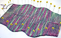

|
||
Premium Patterns Wintry Mix Mitts Love Bytes HawkeyeFree Patterns Kiddie Cadet Summerlin Ruffled Scarf Seamless DS Sock Simply Seamless Pouch Myriads of MushroomsExtras DIY Mitten Blocker Felt Patch Tutorial Yarn Dyeing Tutorial Needle Pouches Knitting Journal |
June 26, 2007 - Posted by Grace SchneblyHomeward BoundAlice, Kenny, and Camdyn flew back to Las Vegas yesterday afternoon. It seems really quiet around here, but I guess life will be getting back to normal now. We did lots of fun things around the City, even lots of things that I had never done before here. Good times were had, but now I will have to wait until Christmas to see them again probably. I didn’t get as much knitting done as I would have liked, but isn’t that always the case? Alice was really good about working on projects and finished a lot of stuff while she was here. I on the other hand, really only finished the knitting on the La Luz Eye Mask. I love the yarn and the colors are so beautiful. To finish that I need to sew the inner pouch filled with lavender and flax seed (does anyone know if I can get flax at Whole Foods?), then seam the knitted piece around that. It really should be a less than one day project, but since it involves seaming it probably will take me a little longer. I also finished up knitting the Marsupial Tote while Alice was here. This is the third one I have made! I love giving them as gifts because you can knit them up so quickly, use any worsted weight wool, and they can really be personalized to fit almost anyone’s taste. I finally got around to felting it this morning, and kind of left it in a little too long. I made a mistake by going back up to my apartment from the laundry room because it was just too hot in there. I stretched and stretched as much as I could, and it is still quite a bit smaller than the one that I made for myself. I still like it, but I prefer them to be slightly floppier and have a little bit of the stitch definition left after felting. Once this dries I need to line it, attach a snap then send it off to my friend for her birthday. I think it might be a little late getting there… but it is the thought that counts right? To go along with the tote I am going to try to make a Swat Team Kitty that looks like my friends cat. I don’t exactly know how I am going to try to get the markings right, so if anyone has tried this and has any advice please leave a comment! Lastly a while ago I was asked how I went about felting my knit items, so I figured I would share my process here too. If you’re interested in learning more about felting, continue by reading below the fold! Felting InstructionsI felt most of my items in a top loading washing machine. I will only felt items by hand if they’re really small like the Crafty Alien toys or something like that. First make sure to put your item in a zipper pillow case before felting! I learned to do this the hard way when the washing machine I use refused to drain after I used it to felt a bunch of items without putting them in a pillow case. The machine was probably clogged with fibers from my felted items. So to save worry, extra time, and money spent on repairing a washer always put your item in a pillow case! I have also noticed that it projects your item from stretching and getting misshapen in the wash, so this is probably the best piece of advice I can give you! The supplies you should take to your washer is your knit item in a zippered pillow case, a bath towel, an old pair of jeans or bed sheet (helps with the agitation), and your regular liquid laundry detergent. Place your knit item and jeans or sheet into your washer and set it to the smallest load size, hot water, and longest agitation cycle. Add a small amount of the laundry detergent. I don’t really know how much I put in, maybe a tablespoon? It varies every time, and it doesn’t seem like a really big deal as long as you don’t put in a ton. I have used Tide and All brands, and both worked fine. A lot of people say to use wool wash but I think it is way too expensive to waste on felting items, especially since regular liquid detergent works great. I let it agitate 10 minutes before checking on the item, and then every 5 minutes at most after that. Each time you check on it take it out of the bag, and squeeze the water out of it to see how the felting is going. When you take your item out of the pillow case make sure you support the whole item, instead of just lifting it by a section of it. This can stretch portions of it out and make it hard to felt evenly. Usually it doesn’t look like it is doing anything at the start, but felting can happen really quickly once it gets going. When it is getting close to the size you want, check it more often to make sure you don’t let it go too long. Sometimes items will look like they are less felted when wet, so be sure to squeeze the water out and check it before throwing it back in. Another important thing that I have learned is to be patient. Sometime it takes 20 minutes and other times I have had to wait for over an hour and a half before it was totally felted. If it isn’t felted after the first agitation cycle is up, just restart the agitation cycle again. You can tell when to take it out by checking the size of it and also by looking at the stitch definition. I usually aim for little or no stitch definition, but for some projects it is nice to still be able to see the stitches. It really just depends on the project and your taste! Also it isn’t a problem if it gets a little small because you can really stretch it into the shape and size you want while it is drying. Don’t let your item go through the spin cycle. I have heard that this can cause permanent creases in your finished item. When it is finished take it out of the wash and rinse it in the sink in cool or warm water to get out the soap, then roll it in the towel to get as much of the water out that you can. You can shape the item while it is drying in lots of different ways. I have stuffed things with towels, clean laundry, plastic bags, or fiber fill (only for stuffed animals, then you have to re-stuff them once they’re dry). You can also stretch items over things like boxes or bowls. I stretched the Kitty Pi I just made over a terracotta planter to make sure it would be a circular shape. Don’t be afraid to really stretch your item into the shape and size you want it. Let it dry in a place that isn’t in direct sunlight. Well this is pretty much everything I know about felting!! It is a learn as you go type thing. Everyone can felt and it lots of fun!! I am by no means an expert, and this is just what I have gathered from my experiences and readings. Good luck! |
   Recent ReviewsRecent Posts
 Our Favorites
|
| © 2007 KathrynIvy.com | ||
{kind=link}